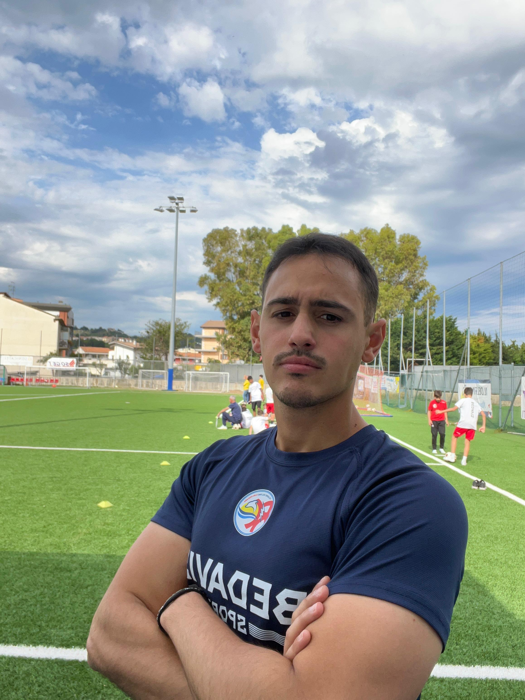

Allenatore e istruttore presso Curi Pescara, laureando magistrale in Ingegneria Informatica.
Uno spazio dedicato a calcio giovanile, metodologia, tecnica e crescita dei giovani calciatori.

Credo che l'apprendimento passi attraverso la libertà di provare, sbagliare e trovare soluzioni. L'errore non è un limite, ma una parte fondamentale del percorso di crescita.
Laureando magistrale in Ingegneria Informatica.
Studio tecnologia, analisi e problem solving con un approccio orientato alla crescita continua.
Istruttore presso Curi Pescara.
Allenatore U10 e vice allenatore U15, con particolare attenzione alla formazione tecnica e cognitiva del giovane calciatore.
7 anni di esperienza arbitrale.
Percorso culminato fino alla categoria Eccellenza, sviluppando lettura del gioco, gestione delle persone e capacità decisionale sotto pressione.
Grassroots Level E.
Corso UEFA C in svolgimento e costante ricerca di nuove idee metodologiche e formative.
Formazione, crescita e sviluppo dei talenti.
Principi, esercitazioni e idee per allenatori.
Crescita personale, coraggio, errore e miglioramento.
Tecnologia, analisi e problem solving.
Allenatore e istruttore presso Curi Pescara, laureando magistrale in Ingegneria Informatica.
Gli articoli verranno pubblicati qui.